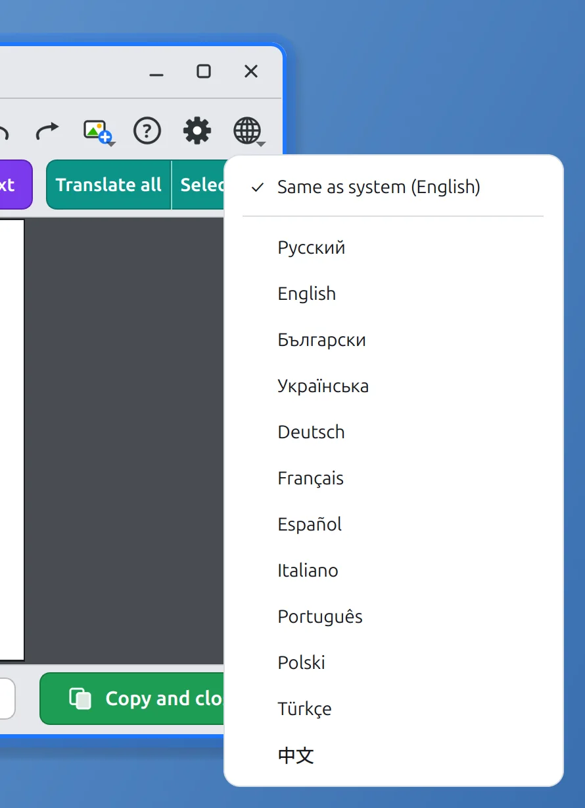
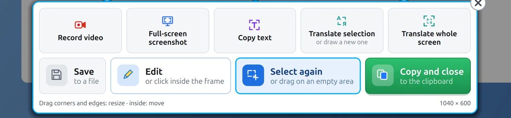
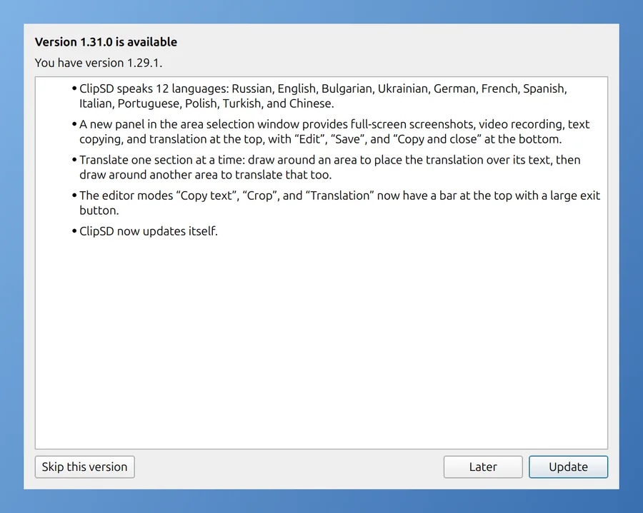

Version history
Version 1.31.0
released
- ClipSD speaks 12 languages: Russian, English, Bulgarian, Ukrainian, German, French, Spanish, Italian, Portuguese, Polish, Turkish, and Chinese. You can change the language instantly without restarting ClipSD: from the tray icon menu, the globe in the editor, the first step of the tour, or Settings.

- A new panel in the area selection window provides full-screen screenshots, video recording, text copying, and translation at the top, with “Edit”, “Save”, and “Copy and close” at the bottom.

- Translate one section at a time: draw around an area to place the translation over its text, then draw around another area to translate that too. Press Esc to exit the mode.

- The editor modes “Copy text”, “Crop”, and “Translation” now have a bar at the top with a large exit button. Press Esc to return to the previous tool.

- ClipSD now updates itself. Once a day, it checks for a new version and offers “Update”, “Later”, or “Skip this version”. To check immediately, open the tray icon menu and select “Check for updates”. Updates are verified with a digital signature; if the new version fails to start, ClipSD restores the previous one.
